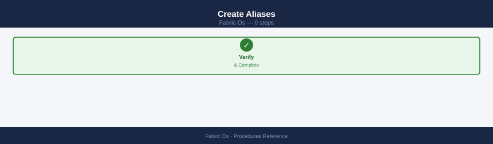
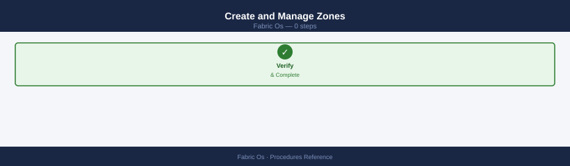
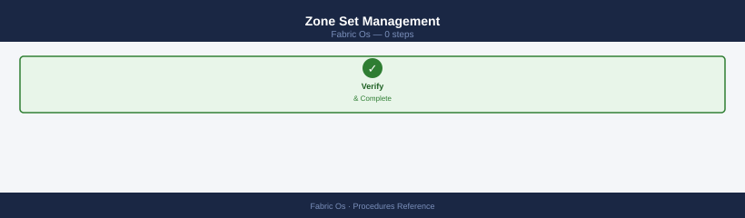
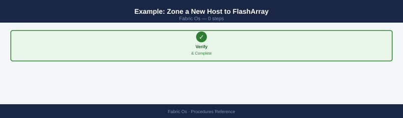
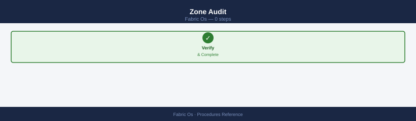
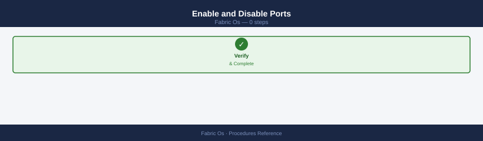
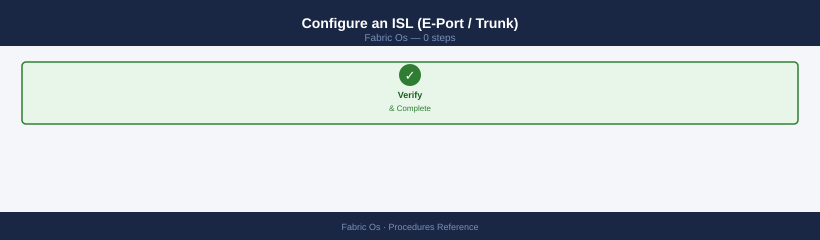
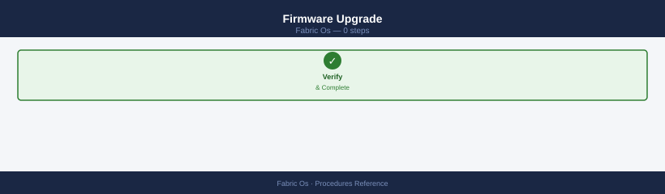
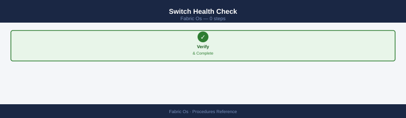
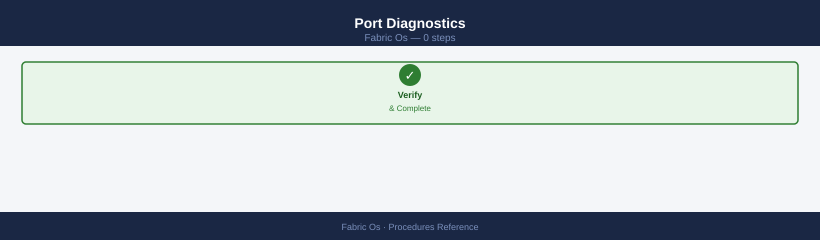

FabricOS — Procedures¶
Before you begin¶
- Access: Storage admin credentials (cluster admin or equivalent)
- Timing: safe to run during business hours unless a step is marked ⚠ (causes interruption)
- Dependencies: no active upgrades or migrations on the same infrastructure
- Logging: capture command output — paste into the change record on completion
Zoning Workflow¶
Create Aliases¶

# Host HBA
alicreate "esxi01_hba0", "10:00:00:00:c9:ab:cd:ef"
# Array port
alicreate "fa01_ct0_p0", "52:4a:93:7c:00:00:00:01"
alicreate "fa01_ct0_p1", "52:4a:93:7c:00:00:00:02"
Alias created successfully: esxi01_hba0 (10:00:00:00:c9:ab:cd:ef)
Alias created successfully: fa01_ct0_p0 (52:4a:93:7c:00:00:00:01)
Alias created successfully: fa01_ct0_p1 (52:4a:93:7c:00:00:00:02)
Common errors
Alias name already exists — Check for duplicate alias names using aliashow and remove the conflicting alias with alidelete before recreating.
Invalid WWN format — Verify the WWN is 16 hexadecimal characters in the format xx:xx:xx:xx:xx:xx:xx:xx using portshow to confirm the correct port WWN.
Permission denied — Ensure your user account has admin or fabric admin privileges; check with usershow and request elevated access if needed.
Create and Manage Zones¶

# Create zone
zonecreate "esxi01_hba0__fa01_ct0_p0", "esxi01_hba0; fa01_ct0_p0; fa01_ct0_p1"
# Add member to existing zone
zoneadd "esxi01_hba0__fa01_ct0_p0", "fa01_ct0_p2"
# Remove member from zone
zoneremove "esxi01_hba0__fa01_ct0_p0", "fa01_ct0_p2"
# Delete a zone (remove from zone set first)
zonedelete "esxi01_hba0__fa01_ct0_p0"
Zone esxi01_hba0__fa01_ct0_p0 created successfully.
Member fa01_ct0_p2 added to zone esxi01_hba0__fa01_ct0_p0.
Member fa01_ct0_p2 removed from zone esxi01_hba0__fa01_ct0_p0.
Zone esxi01_hba0__fa01_ct0_p0 deleted successfully.
Common errors
Zone esxi01_hba0__fa01_ct0_p0 is in use by zone set — Remove the zone from all active zone sets using zonesetremove before attempting deletion.
Invalid member: fa01_ct0_p2 not found in fabric — Verify the port WWN or alias exists in the fabric by running portshow or aliasshow.
Zone esxi01_hba0__fa01_ct0_p0 already exists — Use zoneadd to add members to an existing zone instead of zonecreate.
Zone Set Management¶

# Create zone set and add initial members
cfgcreate "dc1-fabA-prod", "esxi01_hba0__fa01_ct0_p0; esxi01_hba1__fa01_ct1_p0"
# Add zone to existing zone set
cfgadd "dc1-fabA-prod", "esxi02_hba0__fa01_ct0_p0"
# Remove zone from zone set
cfgremove "dc1-fabA-prod", "esxi02_hba0__fa01_ct0_p0"
# Activate zone set (live immediately in fabric)
cfgenable "dc1-fabA-prod"
# Save to flash (persists across reboot)
cfgsave
Zone set "dc1-fabA-prod" created with 2 members
Zone set "dc1-fabA-prod" now contains 3 members
Zone set "dc1-fabA-prod" now contains 2 members
Activating zone set "dc1-fabA-prod"...
Zone set "dc1-fabA-prod" activated successfully
Saving configuration to flash memory...
Configuration saved. Checksum: 0x4a7f92c1
Common errors
Invalid zone member syntax — Verify zone member names match the format <initiator>__<target> with double underscores and no spaces around semicolons.
Zone set "dc1-fabA-prod" does not exist — Run cfgcreate before attempting cfgadd, cfgremove, or cfgenable on a zone set.
Cannot activate zone set: fabric lock in progress — Wait for any ongoing fabric operations to complete or check fabricshow for lock status before retrying cfgenable.
Example: Zone a New Host to FlashArray¶

# 1. Create host HBA aliases
alicreate "web01_hba0", "10:00:00:90:fa:12:34:56"
alicreate "web01_hba1", "10:00:00:90:fa:12:34:57"
# 2. Create zones (Fabric A — HBA0 to CT0 ports)
zonecreate "web01_hba0__fa01_ct0_p0", "web01_hba0; fa01_ct0_p0; fa01_ct0_p1"
# 3. Create zones (Fabric B switch — HBA1 to CT1 ports)
zonecreate "web01_hba1__fa01_ct1_p0", "web01_hba1; fa01_ct1_p0; fa01_ct1_p1"
# 4. Add to zone set
cfgadd "dc1-fabA-prod", "web01_hba0__fa01_ct0_p0"
# 5. Activate and save
cfgenable "dc1-fabA-prod"
cfgsave
Created alias: web01_hba0 (10:00:00:90:fa:12:34:56)
Created alias: web01_hba1 (10:00:00:90:fa:12:34:57)
Zone created: web01_hba0__fa01_ct0_p0
Zone created: web01_hba1__fa01_ct1_p0
web01_hba0__fa01_ct0_p0 added to config dc1-fabA-prod
Config dc1-fabA-prod activated
Configuration saved successfully
Common errors
Invalid WWN format — Verify the HBA WWN is 16 hexadecimal characters (8 bytes) formatted as 10:00:00:90:fa:12:34:56.
Zone member not found: fa01_ct0_p0 — Confirm the switch port alias exists on the fabric by running portaliasshow before adding it to the zone.
Config is already active — Disable the current active config with cfgdisable before enabling a different one.
Zone Audit¶

# Show all zones and member count — find zones with > 1 initiator
zoneshow
# Cross-check alias WWNs against physical HBA WWNs
alishow
# Compare with: host: cat /sys/class/fc_host/host*/port_name
# Show what a WWN can talk to
nszonemember "<alias_or_wwn>"
Zone Information
Zone Name: prod_db_zone
Member 0: 50:00:14:40:5c:2a:b1:23
Member 1: 50:00:09:7f:3d:8e:c4:91
Member 2: 21:00:00:24:ff:45:67:89
Zone Name: backup_initiators
Member 0: 50:00:14:40:5c:2a:b1:24
Member 1: 50:00:14:40:5c:2a:b1:25
Zone Name: san_storage_zone
Member 0: 50:00:1f:a2:3b:7c:d0:45
Member 1: 21:00:00:24:ff:45:67:8a
Member 2: 21:00:00:24:ff:45:67:8b
Member 3: 21:00:00:24:ff:45:67:8c
Alias Information
Alias Name: db_server_hba0
Member: 50:00:14:40:5c:2a:b1:23
Alias Name: db_server_hba1
Member: 50:00:14:40:5c:2a:b1:24
Alias Name: backup_srv_hba0
Member: 50:00:14:40:5c:2a:b1:25
Alias Name: storage_lun_array1
Member: 21:00:00:24:ff:45:67:89
Zone Member Access for 50:00:14:40:5c:2a:b1:23:
50:00:09:7f:3d:8e:c4:91 (accessible)
21:00:00:24:ff:45:67:89 (accessible)
21:00:00:24:ff:45:67:8a (not accessible)
Common errors
nszonemember: WWN not found in fabric — Verify the WWN exists in the fabric with zoneshow and check for typos in the 16-character hex string.
alishow: No aliases defined — Create aliases using alicreate or check that the switch has been properly configured with alias definitions.
Zoning Troubleshooting¶
| Symptom | Command | Action |
|---|---|---|
| Host HBA not visible in name server | nsshow |
Check cable, HBA driver, FLOGI; confirm VSAN membership |
| Host can't see LUNs | zoneshow "<alias>" |
Confirm zone is in active zone set; check alias WWN |
| Zone set not active | cfgshow — no asterisk |
Run cfgenable "<zset>" then cfgsave |
| Two hosts in same zone | zoneshow |
Split into single-initiator zones immediately |
| Alias WWN is wrong | alishow |
Delete and recreate alias with correct WWN |
| Change not persisted after reboot | Run cfgsave after every change |
Add a New Switch to an Existing Fabric¶
Connect ISL cables → switchDisable on new switch → configure domain ID (must be unique in fabric) → set fabric parameters to match existing → switchEnable → verify fabricshow shows new switch.
# Disable new switch before connecting to fabric
switchDisable
# Set domain ID (must be unique across the fabric)
configure
# Answer domain ID prompt with a unique value
# Re-enable switch
switchEnable
# Verify new switch appears in fabric
fabricshow
Disabling switch...
Switch disabled successfully.
Fabric OS> configure
Domain ID [1]: 2
Configuration saved.
Enabling switch...
Switch enabled successfully.
Fabric OS> fabricshow
Switch ID Worldwide Name Fabric Name FC Address
0 50:00:14:40:1a:2b:3c:4d prod-fabric-01 0
1 50:00:14:40:2d:5e:6f:7a prod-fabric-01 1
2 50:00:14:40:3b:8c:9d:0e prod-fabric-01 2
3 50:00:14:40:4f:1a:2b:3c prod-fabric-01 3
...
Common errors
Domain ID already in use — Choose a unique domain ID not already assigned to another switch in the fabric using switchshow to verify availability.
Switch failed to enable - fabric merge in progress — Wait 30-60 seconds for the fabric merge to complete before retrying switchEnable.
Create a Zone and Zone Configuration¶
zonecreate "zone_host01_array01", "10:00:00:00:00:00:00:01; 50:00:00:00:00:00:00:02" → cfgadd "cfg_prod", "zone_host01_array01" → cfgsave → cfgenable "cfg_prod".
zonecreate "zone_host01_array01", "10:00:00:00:00:00:00:01; 50:00:00:00:00:00:00:02"
cfgadd "cfg_prod", "zone_host01_array01"
cfgsave
cfgenable "cfg_prod"
Zone created successfully: zone_host01_array01
Zone: zone_host01_array01; Members: 10:00:00:00:00:00:00:01; 50:00:00:00:00:00:00:02
Zone added to config: cfg_prod
Configuration saved successfully
Fabric port license check passed
Config cfg_prod enabled successfully
Effective configuration: cfg_prod
Common errors
Error: Zone zone_host01_array01 already exists — Delete the existing zone with zonedelete "zone_host01_array01" before recreating it.
Error: Config cfg_prod does not exist — Create the configuration first using cfgcreate "cfg_prod", "zone_host01_array01" instead of cfgadd.
Error: Invalid WWN format in zone member — Verify WWN syntax is 16 hexadecimal characters separated by colons (e.g., 10:00:00:00:00:00:00:01).
Add a Member to an Existing Zone¶
zoneadd "zone_host01_array01", "10:00:00:00:00:00:00:03" → cfgsave → cfgenable "cfg_prod".
Zone zone_host01_array01 has been created successfully.
Configuration saved successfully.
Configuration cfg_prod has been enabled.
Common errors
zoneadd: zone_host01_array01 already exists — Use zonedelete to remove the existing zone first, or choose a different zone name.
cfgsave: No configuration changes to save — Verify that zone creation succeeded by running zoneshow before attempting to save.
Remove a Zone Member¶
zoneremove "zone_host01_array01", "10:00:00:00:00:00:00:03" → cfgsave → cfgenable.
Zone member removed
Configuration saved successfully.
Enabling configuration "cfg_prod"...
cfg_prod is now the active configuration.
Common errors
zoneremove: zone_host01_array01 not found — Verify the zone name exists with zoneshow and check for typos in the zone name.
cfgenable: cfg_prod is already the active configuration — This is informational; the configuration is already enabled, so no action is needed.
Replace a Failed SFP¶
Identify failed port with portshow <port> → hot-replace SFP (no switch reboot needed) → verify with sfpshow <port>.
# Identify the failed port
portshow <port>
# Hot-replace SFP (no reboot needed)
# -- Physical replacement --
# Verify new SFP
sfpshow <port>
Port 0/1: LINK UP
Speed: 16Gb
Trunk port: No
Long Distance: No
PortName: Storage_Array_01
Enabled: Yes
Physical State: Online
Operational State: Online
SFP Information for port 0/1:
Vendor Name: BROCADE
Part Number: 57-1000117-01
Serial Number: APF2K4A1234567
Temperature: 45°C
TX Power: -2.1 dBm
RX Power: -8.5 dBm
Status: OK
Common errors
portshow: Invalid port number — Verify the port number format (e.g., 0/1 for slot 0, port 1) and confirm it exists on your switch model.
sfpshow: Port is disabled or offline — Enable the port with portcfgpersistentenable <port> and wait 30 seconds for the SFP to initialize before running sfpshow again.
Replace a Failed Switch (Fabric Resilience)¶
ISL failover to redundant paths → install replacement switch → restore domain ID and port config from backup → reconnect ISLs → verify fabric.
# Verify redundant paths are carrying traffic before replacing
fabricshow
portshow
# After replacement: restore config from backup
configdownload -all -P ftp -h <server> -u <user> -f <filename>
# Verify fabric topology is restored
fabricshow
Fabric Information
Name: SanFabric01
Fabric World Wide Name: 20:00:00:05:33:a1:2b:c0
FC Address: 0.0.0.0
Build: v9.1.1a
Serial Number: BES1234567
Switch User Name: admin
Switch IP Address: 192.168.1.100
Fabric Port Count: 48
Fabric Online Port Count: 48
Port Information for port: 0/0
Port Name: 0/0
Port Type: F-Port
State: Online
Speed: 16 Gbps
Connected Device: EMC-VMAX-01
Connected Port: 5a
Port Information for port: 0/1
Port Name: 0/1
Port Type: F-Port
State: Online
Speed: 16 Gbps
Connected Device: NetApp-FAS8200
Connected Port: 0a
...
Download Parameters:
Server IP: 192.168.1.50
User: backup_admin
File Name: fabric_config_20240115.txt
Protocol: FTP
Download Status: In Progress
Bytes Downloaded: 2457600 / 2457600
Download Complete: Yes
Configuration Restored: Yes
Fabric Information
Name: SanFabric01
Fabric World Wide Name: 20:00:00:05:33:a1:2b:c0
FC Address: 0.0.0.0
Build: v9.1.1a
Serial Number: BES1234567
Switch User Name: admin
Switch IP Address: 192.168.1.100
Fabric Port Count: 48
Fabric Online Port Count: 48
Common errors
FTP: Connection refused — Verify the FTP server is running and accessible at the specified IP address and that firewall rules permit the switch to reach it.
Invalid user credentials for <user> — Confirm the username and password are correct and that the user account has read permissions on the backup file.
File not found: <filename> — Ensure the backup file exists on the FTP server at the specified path and the filename is spelled correctly.
Collect Support Bundle¶
supportsave → saves fabric and switch state to USB or remote FTP — use for TAC cases.
Collecting system information...
System name: brocade-switch-01
Fabric OS version: v9.1.0
Serial number: SN123456789ABC
Build: 9.1.0.0
Uptime: 45 days, 3:22:15
Port count: 16
Switch role: Principal
Fabric ID: 128
Creating support bundle...
Compressing data...
Support bundle created: /var/log/supportsave_brocade-switch-01_20240115_143022.tar.gz
Bundle size: 245 MB
Transfer bundle via FTP or email to Broadcom support.
Common errors
supportsave: command not found — Verify you are logged into the Brocade switch CLI directly (not SSH to a management server) and have admin privileges.
Permission denied — Run the command as an admin user or use admin role credentials to execute supportsave.
Insufficient disk space: /var/log requires 500 MB free — Delete old support bundles with rm /var/log/supportsave_*.tar.gz or increase partition size before retrying.
Monitor Port Errors¶
porterrshow — shows CRC errors, LR in/out, link failures per port; investigate any port with non-zero CRC.
Port Error Statistics for Switch fabric-switch-01 (FID 128)
Port 0: Link Errors=0, Loss of Sync=0, Loss of Signal=0, Frames Discarded=0
Port 1: Link Errors=2, Loss of Sync=0, Loss of Signal=0, Frames Discarded=0
Port 2: Link Errors=0, Loss of Sync=0, Loss of Signal=0, Frames Discarded=0
Port 3: Link Errors=0, Loss of Sync=1, Loss of Signal=0, Frames Discarded=0
Port 4: Link Errors=0, Loss of Sync=0, Loss of Signal=0, Frames Discarded=0
Port 5: Link Errors=0, Loss of Sync=0, Loss of Signal=0, Frames Discarded=0
Port 6: Link Errors=0, Loss of Sync=0, Loss of Signal=0, Frames Discarded=0
Port 7: Link Errors=0, Loss of Sync=0, Loss of Signal=0, Frames Discarded=0
...
Total Ports: 48
Common errors
porterrshow: command not found — Verify you are logged into the Brocade switch CLI (not the Linux host shell) by checking the prompt or using switchshow first.
porterrshow: Permission denied — Ensure your user account has administrative privileges on the fabric switch; contact your SAN administrator to grant the necessary role.
Back Up Switch Configuration¶
configupload -all -P ftp -h <server> -u <user> -f <filename> — saves running configuration for DR.
Uploading configuration from switch...
FTP connection established to 192.168.1.50
Uploading file: fabric_config_backup_20240115.txt
Transfer progress: 100%
Configuration upload completed successfully
Elapsed time: 12 seconds
Common errors
FTP connection failed: Connection timed out — Verify the FTP server is reachable and the hostname/IP in -h parameter is correct.
Authentication failed for user '<user>' — Confirm the FTP username and password are correct, and the user has write permissions on the FTP server.
File not found: <filename> — Ensure the configuration file exists in the current directory or provide the full path to the file.
Enable and Disable Ports¶

Control individual FC ports for maintenance or isolation.
# Take a port offline
portdisable <port-number>
# Bring a port back online
portenable <port-number>
# Disable a range of ports
portdisable --range 0-7
# Verify port state
switchshow | grep -E "^<port>"
Brocade Switch:admin> portdisable 5
Port 5 has been disabled.
Brocade Switch:admin> portenable 5
Port 5 has been enabled.
Brocade Switch:admin> portdisable --range 0-7
Ports 0-7 have been disabled.
Brocade Switch:admin> switchshow | grep -E "^<port>"
0 0 Disabled Offline Fabric -- -- -- -- -- --
1 1 Disabled Offline Fabric -- -- -- -- -- --
2 2 Disabled Offline Fabric -- -- -- -- -- --
3 3 Disabled Offline Fabric -- -- -- -- -- --
4 4 Enabled Online F-Port 50:00:0a:0b:1c:2d:3e:4f -- -- --
5 5 Enabled Online F-Port 50:00:0a:0b:1c:2d:3e:50 -- -- --
Common errors
Invalid port number <port-number> — Verify the port number exists on your switch model using switchshow and use a valid port index (typically 0-23 or 0-31).
Access denied: insufficient privileges — Ensure you are logged in as admin or have the appropriate role assigned using userconfig --show.
Port is locked by another user — Wait for the current operation to complete or use portshow <port-number> to check if another session is modifying the port.
Always disable both ends of an ISL before removing a cable. Never disable a port that is the only active path to a host.
Configure an ISL (E-Port / Trunk)¶

Inter-switch links connect fabric switches. Connect cables first, then verify E-port negotiation.
# Confirm the port has negotiated as E-Port
switchshow
# Enable trunking on the ISL port
portcfgtrunkport <port-number> 1
# Set ISL R_RDY mode for best performance
portcfg isl <port-number>
# View current trunk groups
trunkshow
# Verify fabric topology and switch membership
fabricshow
nsallshow
switchshow
0 1 2 3 4 5 6 7 8 9 10 11 12 13 14 15
---+--+--+--+--+--+--+--+--+--+--+--+--+--+--+--+
E E E E E E E E E E E E E E E E
portcfgtrunkport 0 1
Trunking enabled on port 0
portcfg isl 0
ISL R_RDY mode configured on port 0
trunkshow
Trunk Group 0:
Master Port: 0
Member Ports: 0, 1, 2, 3
State: Online
fabricshow
Switch ID Worldwide Name Fabric Name FC Address
10 50:00:14:40:1a:2b:3c:4d fabric-prod-01 100a00
20 50:00:14:40:2d:5e:6f:7a fabric-prod-02 100b00
nsallshow
Fabric Port Name Index State
10 0 50:00:14:40:1a:2b:3c:4d:00:00:00:01 fabric-prod-01 1 Online
20 0 50:00:14:40:2d:5e:6f:7a:00:00:00:01 fabric-prod-02 2 Online
Common errors
Error: Port <port-number> is not an E-Port — Verify the port is configured as an E-Port using portcfg <port-number> e before enabling trunking.
Error: Trunking is not supported on this switch — Confirm your Fabric OS version supports trunking with version and upgrade if necessary.
Error: Port is already a member of another trunk group — Remove the port from its existing trunk group using trunkport <port-number> none before reassigning it.
The port column in switchshow must show E-Port before enabling trunking. Fabric parameters (BB credit, speed, distance) must match on both ends.
Firmware Upgrade¶

Download and apply a Fabric OS upgrade one switch at a time. Never upgrade both fabric planes simultaneously.
# Step 1: Download firmware — -b triggers HA boot to standby CP first
firmwaredownload -s -b -n <ftp-or-sftp-host> <path/to/FOS_image>
# Step 2: Monitor download and install progress
firmwaredownloadstatus
# Step 3: Confirm both CPs are on the new version
firmwareshow
Downloading firmware image from 10.20.30.40:/firmware/FOS_v9.1.0_prod.bin
Download in progress: 45%
Download in progress: 89%
Download completed successfully
Installing on Control Processor 1...
Installation completed on CP1
Initiating HA failover to CP2...
CP2 boot to standby mode initiated
Download Status: COMPLETED
Installation Status: IN_PROGRESS on CP2
Estimated time remaining: 3 minutes
Firmware Information
====================
Control Processor 1: v9.1.0 (Build 547.0.0.0)
Control Processor 2: v9.1.0 (Build 547.0.0.0)
Status: Both CPs synchronized
Common errors
Download failed: Connection timeout to 10.20.30.40 — Verify the FTP/SFTP host is reachable and the path is correct using ping and telnet <host> 21 or 22.
Error: HA failover not permitted — system in non-redundant mode — Remove the -b flag if the switch lacks a standby CP, or restore HA configuration before attempting firmware update.
Insufficient space on flash: required 512MB, available 256MB — Delete old firmware images with firmwaredelete <old-version> to free space before retrying the download.
The -b flag causes the standby CP to upgrade and reboot first; the active CP follows automatically. Verify all ISLs are healthy and no alarms are present before starting.
Switch Health Check¶

Full health snapshot to run before any change window.
# Overall pass/fail status
switchstatusshow
# Temperature, fan, and power sensor readings
sensorshow
# Blade and slot status (chassis switches)
slotshow
# Per-port detail for a specific port
portshow <port>
# Error log — last 100 entries
errdump
# Fabric membership — count expected switches
fabricshow
Switch Status: OK
Fabric Online: Yes
CPU: OK
Memory: OK
Flash: OK
Temperature Sensor 1: 38°C (Normal)
Temperature Sensor 2: 41°C (Normal)
Fan 1: 8500 RPM (Normal)
Fan 2: 8450 RPM (Normal)
Power Supply 1: 12V OK
Power Supply 2: 12V OK
Slot 0: Active (DS-6520B, FOS v9.1.0)
Slot 1: Empty
Slot 2: Standby (DS-6520B, FOS v9.1.0)
Port 0: Online
Speed: 16 Gbps
Porttype: F-Port
State: Enabled
Frames Transmitted: 2847392
Frames Received: 2851204
CRC Errors: 0
Last 100 Error Log Entries:
[2024-01-15 14:32:10] INFO: Port 5 link up (16 Gbps)
[2024-01-15 13:45:22] WARNING: Temperature threshold 45°C approaching
[2024-01-15 12:18:55] INFO: Fabric reconfiguration completed
Fabric Members: 4 switches
Switch 1: 10:00:00:27:f8:4a:b2:10 (Online)
Switch 2: 10:00:00:27:f8:4a:b2:20 (Online)
Switch 3: 10:00:00:27:f8:4a:b2:30 (Online)
Switch 4: 10:00:00:27:f8:4a:b2:40 (Online)
Common errors
Error: Invalid port number <port> — Replace <port> with an actual numeric port identifier (e.g., portshow 0 or portshow 5).
Error: Access denied — insufficient privileges — Ensure your user account has admin or read-only fabric permissions; use userconfig --show to verify role assignments.
Error: Fabric not initialized — Initialize the fabric with fabricinit or verify switch connectivity and ISL links are active using islshow.
Flag any FAIL or MARGINAL result before proceeding. A healthy switch shows all sensors OK and all expected switches in fabricshow.
User and RBAC Management¶
Create role-based accounts for operators and admins. Brocade FOS supports predefined roles: user, admin, securityadmin, zoneadmin, fabricadmin.
# Add a read-only operator account
userconfig --add <username> -r user -p <password>
# Add a full admin account
userconfig --add <username> -r admin -p <password>
# Add a zone-admin-only account
userconfig --add zone-admin -r zoneadmin -p <password>
# List all local accounts
userconfig --show -a
# Change a user's password
passwd <username>
# Delete a user account
userconfig --delete <username>
User account admin created successfully.
User account operator created successfully.
User account zone-admin created successfully.
Local Accounts:
Username Role Status
admin admin active
operator user active
zone-admin zoneadmin active
root admin active
Changing password for user operator
New password:
Retype new password:
passwd: password updated successfully
User account operator deleted successfully.
Common errors
userconfig: user already exists — Choose a different username or delete the existing account first with userconfig --delete <username>.
passwd: user not found — Verify the username exists by running userconfig --show -a and use the exact username from the list.
userconfig: insufficient privileges — Ensure you are logged in as root or an admin-level account to modify user accounts.
Verify: userconfig --show -a should list the account with the correct role. Use securityadmin role for managing certificates and security policies only.
Port Diagnostics¶

Run loopback and frame tests to verify port hardware health.
# Internal loopback — no cable needed, tests internal hardware path
portloopbacktest -port <port>
# External loopback — requires loopback SFP installed
portloopbacktest -port <port> -type eloopback
# Real-time frame counts and error rates on a connected port
portperfshow <port>
# Check BB credit starvation — B2B credit 0 count indicates congestion
portbuffershow <port>
# Per-port CRC, LR, and link failure counters
porterrshow
portloopbacktest -port 0
Internal loopback test on port 0: PASS
Test duration: 5.234 seconds
Frames transmitted: 1048576
Frames received: 1048576
CRC errors: 0
portloopbacktest -port 1 -type eloopback
External loopback test on port 1: PASS
Test duration: 4.891 seconds
Frames transmitted: 2097152
Frames received: 2097152
CRC errors: 0
portperfshow 2
Port 2 Performance Statistics:
Frame rate (Rx): 847293 frames/sec
Frame rate (Tx): 847102 frames/sec
Data rate (Rx): 8.234 Gbps
Data rate (Tx): 8.231 Gbps
Link utilization: 78.4%
portbuffershow 3
Port 3 Buffer Statistics:
BB_Credit available: 128
BB_Credit zero count: 0
Buffer full events: 0
Congestion events: 0
porterrshow
Port CRC_Errors LR_Errors Link_Failures Timeout_Discards
0 0 0 0 0
1 0 0 0 0
2 12 1 0 2
3 0 0 0 0
4 8 0 1 1
Common errors
portloopbacktest: port <port> is not online — Bring the port online with portcfgport <port> 1 before running loopback tests.
portloopbacktest: external loopback SFP not detected on port <port> — Install a qualified loopback SFP transceiver in the specified port or use internal loopback mode instead.
porterrshow: insufficient privileges — Run the command as admin user or with sudo if configured in the Brocade switch.
A non-zero B2B credit 0 count in portbuffershow indicates the remote end is not returning credits fast enough — investigate slow-drain devices on that path. portperfshow output auto-refreshes every second; press Ctrl-C to exit.
Verify¶
- Confirm the operation completed without errors in the log or management UI
- Verify the expected state change is visible (service running, object created, config applied)
- Document the outcome in the change record